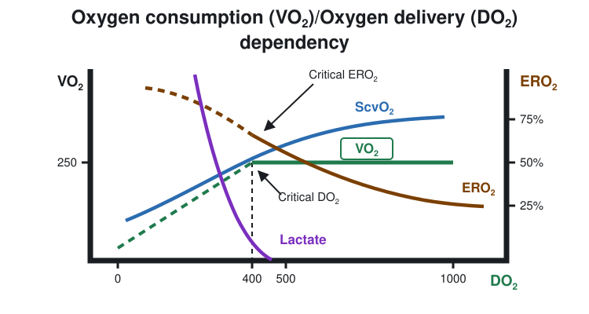
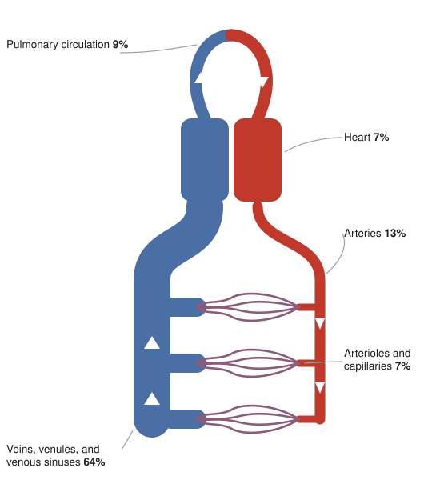
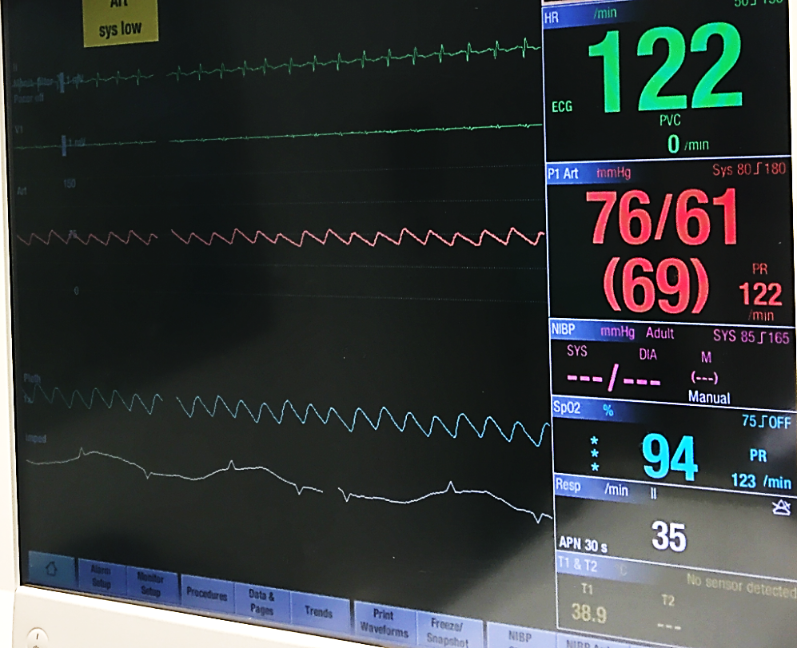
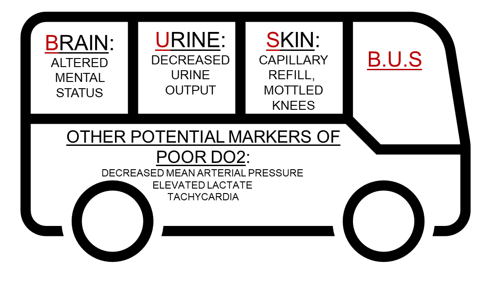

Module N1
What shock is, and why hemodynamics matters
What do we mean when we say that a patient is in shock? For many people, shock simply represents a low blood pressure on the patient monitor. The concept of shock is actually much more sophisticated than just a low blood pressure. It is a failure of the body's cells to receive and use enough oxygen, and everything hemodynamic that follows exists to help us see that failure and act on it.
Hemodynamics is the study of the physical principles that move blood through the cardiovascular system: the cardiac output, vascular resistance, blood volume, and vessel properties that together determine flow, pressure, and where that blood is distributed. We spend time on it for one reason. When a patient is in shock, hemodynamic reasoning lets us work out why and pull the right lever, instead of chasing a number that happens to be abnormal. Studying it gives us the physiological basis for recognizing the cause of shock, whether hypovolemic, obstructive, cardiogenic, or distributive, and tailoring the response to it.
A physiologic definition
Whole-body homeostasis ultimately depends on one event repeated in every cell: mitochondrial oxygen consumption (VO₂) used to make ATP. When oxygen runs short, cells fall back on anaerobic metabolism, which makes far less ATP per unit of fuel and leaves lactate behind. In a nutshell, shock represents a mismatch: the oxygen available for tissues to use (oVO₂) has fallen below what they need to keep that machinery running (nVO₂).
Keeping this in front of us changes the goal when we assess and treat a patient in shock. Our task is not to normalize a pressure. It is to restore the balance between the oxygen tissues need and the oxygen they are getting. The goal is not simply to achieve a threshold minimum blood pressure.
Delivery, extraction, and where the balance can break
Oxygen consumption has a telling relationship with oxygen delivery, the convective transport of oxygen to the tissues, written DO₂:
Over a wide range, VO₂ stays independent of DO₂. As delivery falls, the tissues simply pull a larger fraction of the oxygen off each pass of blood, raising the oxygen extraction ratio (ERO₂). You see this as a falling central (ScvO₂) or mixed (SvO₂) venous saturation. Normally DO₂ exceeds VO₂ by a wide margin, so there is plenty of slack. But once delivery drops past a critical threshold, extraction maxes out, the ERO₂ curve flattens, and VO₂ can no longer be defended: it becomes supply-dependent, falling in step with DO₂. That is the moment lactate climbs and venous saturation drops together, the signature of anaerobic metabolism.

From this one relationship come three ways to read a patient in trouble, each a ratio of what is observed to what is needed:
Shock is relative, not a threshold
Notice that every one of those definitions is a ratio, judged against that patient's own demand. There is no single cardiac output, blood pressure, or lactate that defines shock for everyone. A patient with long-standing heart failure can adapt to a cardiac output that would be frankly unsustainable in a healthy person, while a previously well patient can be in profound shock at numbers that look unremarkable on paper. This is why we resist treating any one value as a target and read the whole picture instead: a number only means something in the context of that patient's physiology.
Two ways the balance breaks
Oxygen can come up short for two fundamentally different reasons, and separating them matters. Most commonly delivery fails, the circulatory-failure branch above, where not enough oxygenated blood reaches the tissues. Less commonly delivery is adequate but the tissues cannot use what arrives, a problem of extraction and utilization. The management of shock largely rests on a working assumption: that if we optimize the macrocirculation and oxygen delivery, we will restore or protect the microcirculation and, with it, normal cellular respiration. That bias is deliberate, because the utilization side is both hard to measure and hard to fix, whereas we can estimate and manipulate DO₂. Distributive shock straddles both, since sepsis maldistributes flow and, through microvascular shunting and mitochondrial dysfunction, impairs extraction.
A small number of mechanisms
For all its presentations, shock arises through only a handful of mechanisms, and each perturbs the same circulatory loop in a characteristic way. That loop is worth picturing before we name them: at any given moment most of the blood volume is not in the heart or the arteries at all, but sitting in the veins.

| Mechanism | What goes wrong | Typical example |
|---|---|---|
| Cardiogenic | The pump fails, from the left or right heart | Large MI, decompensated heart failure |
| Obstructive | Flow is mechanically blocked | Tamponade, massive PE, tension pneumothorax |
| Distributive | Vascular tone collapses and blood is maldistributed | Sepsis, anaphylaxis, neurogenic shock |
| Hypovolemic | There is not enough volume to pump | Hemorrhage, severe dehydration |
They can and often do coexist. What lets us tell them apart is that each one leaves a characteristic fingerprint on that loop. The rest of the Novice pathway builds a map of the circulation and then teaches you to read those fingerprints.
Why oxygen delivery, and not blood pressure
Here is the practical problem. The whole rationale for hemodynamic assessment is to find out whether VO₂ is inadequate and why, yet VO₂ itself cannot be measured at the bedside. So we reach for surrogates, and the one most caretakers default to is the mean arterial pressure on the monitor.

The trouble is that pressure and delivery are only loosely coupled. MAP is roughly cardiac output times systemic vascular resistance plus a downstream critical pressure, while DO₂ tracks hemoglobin, saturation, and that same cardiac output. Using MAP as a stand-in for CO assumes that SVR and the downstream pressure hold steady, an assumption that is often wrong in the ICU, where shock states, vasopressors, fluids, and positive-pressure ventilation affect these endpoints. None of this makes bedside assessment useless. It makes it something to interpret rather than read off, which is exactly the skill this course is built to teach.

So, if shock is more about oxygen use than MAP, how do we measure oxygen use? Unfortunately, oxygen use is challenging to measure continuously at the bedside. In lieu of this, we need something with parameters we can actually estimate and influence. That is oxygen delivery, and it is where we go next.